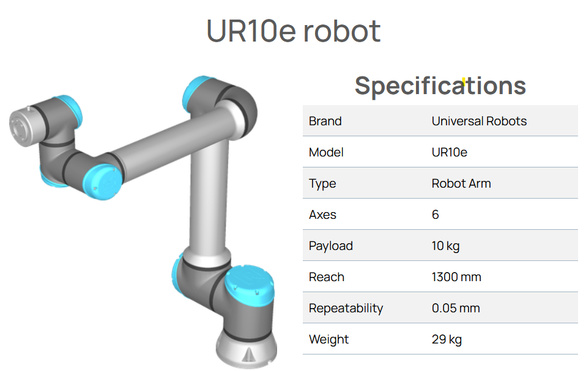
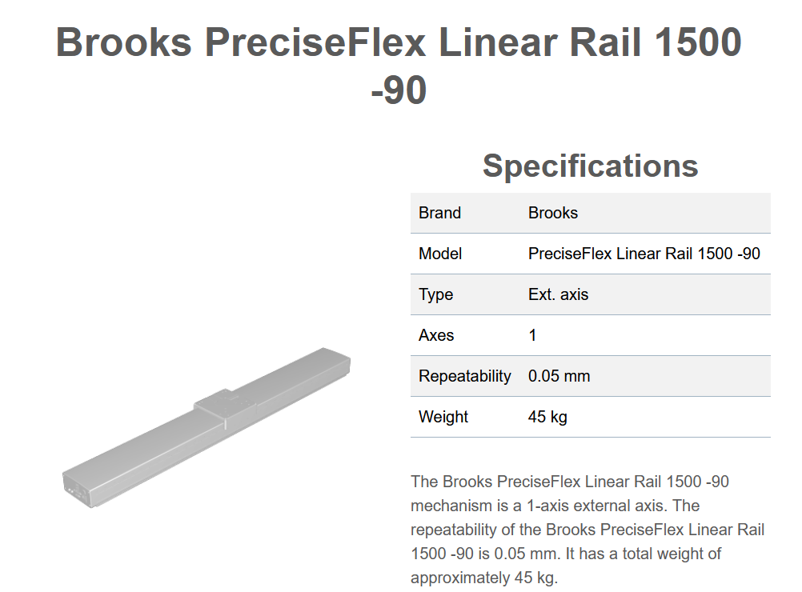

Industrial Process Simulation
Overview
The data used in this project is generated from a simulated industrial process modeled in RoboDK, a professional software for offline programming and simulation of industrial robots. This simulation serves as a digital twin of a real-world packaging and palletizing process, allowing data collection in a controlled and replicable environment.
Note
The original simulation is publicly available on the official RoboDK website:
🔗 Official RoboDK Project: https://robodk.com/example/Mixed-Applications-with-UR10e
RoboDK enables the creation of complete robotic cells, simulates realistic industrial workflows, and allows extraction of operational data such as positions, speeds, and accelerations — essential for machine learning tasks like predictive maintenance or anomaly detection.
Simulation Description
The simulated process represents an automated depalletizing, boxing (bottle filling), and palletizing system for bottles. It includes three main stages:
Depalletizing: A robot picks empty boxes from a pallet and places them on a conveyor.
Boxing: A second robot fills each box with several bottles delivered by a separate conveyor.
Palletizing: A third robot, mounted on a vertical linear rail, stacks the filled boxes onto a new pallet.
Cell Components
UR10e Robots
Three UR10e robotic arms are used in the simulation:
Robot 1: Handles the depalletizing of empty boxes.
Robot 2: Performs the boxing by placing bottles into the boxes.
Robot 3: Mounted on a vertical rail to palletize the full boxes.
The UR10e is a 6-axis collaborative robot with a 1300 mm reach and a 10 kg payload, well-suited for packaging and handling tasks.
{kind=link}
Conveyors
Two conveyors support the material flow within the cell:
Conveyor_Box: Transports empty or filled boxes.
Conveyor_Bottle: Delivers bottles to the boxing robot.
{kind=link}
Vertical Linear Rail
The third robot is mounted on a vertical linear rail to reach various pallet layers during the stacking operation.
{kind=link}
Simulation Video
Data Collection
Throughout the simulation, the following data is collected for each component (robots, conveyors, rail):
Cartesian positions (X, Y, Z)
Joint velocities & accelerations (for robots)
Linear speeds & accelerations (for conveyors & rail)
Timestamps
The data is recorded in real-time and saved in CSV format, capturing the full operational cycle. This dataset consists only of normal operation data, representing the system’s standard behavior without faults or disruptions. This choice ensures the generation of a baseline for anomaly detection, where the machine learning models will learn the expected behavior and flag deviations that could indicate potential issues.
Below are representative samples illustrating the kind of data captured:
{kind=link}
Figure: Example time series from the vertical rail showing position (mm), speed (mm/s) and acceleration (mm/s²) over the full collection cycle.
{kind=link}
Figure: Example time series of conveyor speed (mm/s) as boxes traverse the belt.
Getting Started
This section guides you through setting up the environment, running the simulation in RoboDK, and collecting data using the provided Jupyter Notebook.
Prerequisites
✅ RoboDK installed on your machine ➤ Download: https://robodk.com/download
✅ Python 3.8+ with jupyter, robodk, numpy, pandas (all libraries used are already listed in the repository)
📦 All required files (simulation, notebook) are included in this GitHub repository — no extra downloads needed.
Local Workflow
Follow these steps to run the simulation and collect data:
Clone or download this repository to your local machine: 🔗 sigma-industrial-ai
Open RoboDK. Then, in the cloned repository, open the simulation file:
files/simulation.rdkLaunch Jupyter Notebook or JupyterLab, and open the file:
notebooks/data_collection.ipynbRun all cells to connect via the robodk API and generate the CSV files.
Note
Data Collection Environment While Google Colab provides a convenient cloud-based Jupyter interface, it cannot directly connect to a locally running RoboDK instance because Colab’s execution environment is isolated from your machine’s localhost network.
To collect data in real time from RoboDK, you have two practical options:
Local Jupyter Notebook Run your Python data‑collection script in a standard Jupyter Notebook or JupyterLab on the same PC where RoboDK is installed. This local setup can connect out‑of‑the‑box to the RoboDK API (robodk) over TCP/IP.
Colab with a Local Runtime If you still wish to use Colab’s interface, you can expose a local Jupyter server to Colab using the jupyter_http_over_ws extension. This lets Colab act as a front‑end while all code runs on your local machine, granting access to RoboDK’s API.
Without one of these configurations, any attempt to collect RoboDK data directly in a standard Colab notebook will fail due to network restrictions between Colab’s cloud servers and your local host.